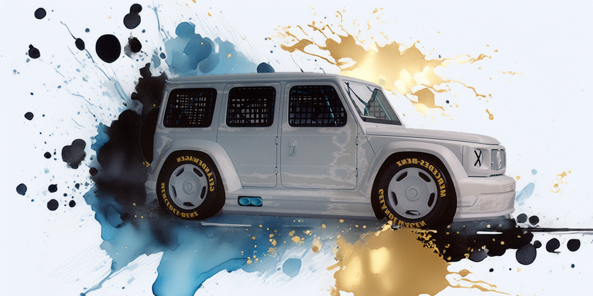
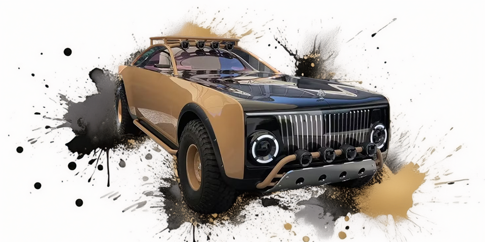
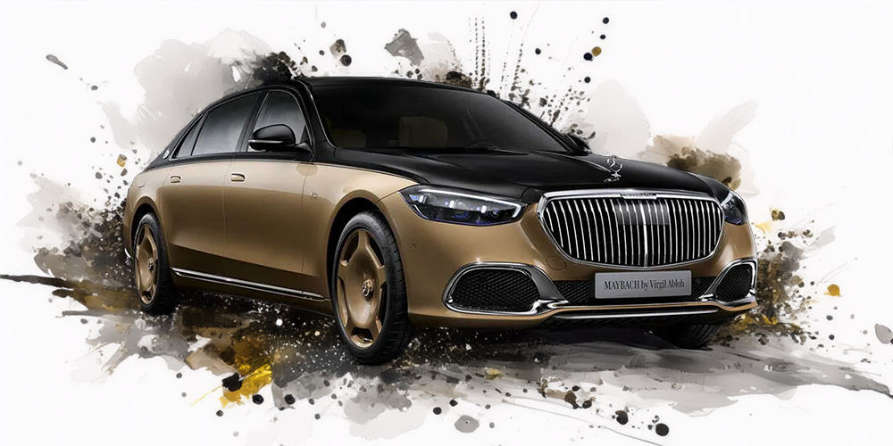

La relación de Virgil Abloh con Mercedes-Benz comenzó en 2019, cuando el diseñador fue invitado a colaborar en un proyecto especial para la marca automotriz de lujo. A través de su visión innovadora y su enfoque artístico, Abloh logró transformar la percepción de los vehículos Mercedes, incorporando su distintivo estilo urbano y contemporáneo. Esta colaboración se materializó en varios proyectos destacados, incluyendo la remodelación del emblemático G-Class y la creación de ediciones limitadas como el Maybach S680. Abloh no solo aportó su estética única, sino que también exploró la intersección entre la moda y el diseño automotriz, estableciendo un nuevo estándar en el lujo contemporáneo y dejando un legado duradero en la industria automotriz. Su asociación con Mercedes-Benz fue una manifestación perfecta de cómo la creatividad puede redefinir los límites del diseño, haciendo de cada auto una obra de arte.
Project Geländewagen

En 2020, Virgil colaboró con Mercedes-Benz para rediseñar la icónica G-Wagon, transformándola en una obra de arte de lujo. Con una estética blanco mate y detalles industriales, esta G-Class conceptual combinaba el estilo off-road con el minimalismo de Abloh. Fue subastada para beneficencia y se centró en la creación de una declaración de arte en lugar de una producción masiva.
Project MAYBACH

En 2021, Virgil y Mercedes-Benz lanzaron el “Maybach by Virgil Abloh”, un sedán de lujo conceptual que reimaginaba el modelo clásico de la Maybach S-Class. Con un diseño en dos tonos, negro y beige, este auto combinaba lujo con la estética minimalista de Abloh. Este fue su último proyecto con Mercedes-Benz y se lanzó una edición limitada inspirada en su diseño.
Maybach S680 Virgil Abloh Edition

El “Maybach S680 Virgil Abloh Edition” fue lanzado en 2022, después del fallecimiento de Abloh. Este sedán de lujo de edición limitada tiene un acabado en dos tonos (negro y arena), y es un claro reflejo del estilo distintivo de Abloh. Solo se produjeron 150 unidades, destacándose por su lujo y personalización.